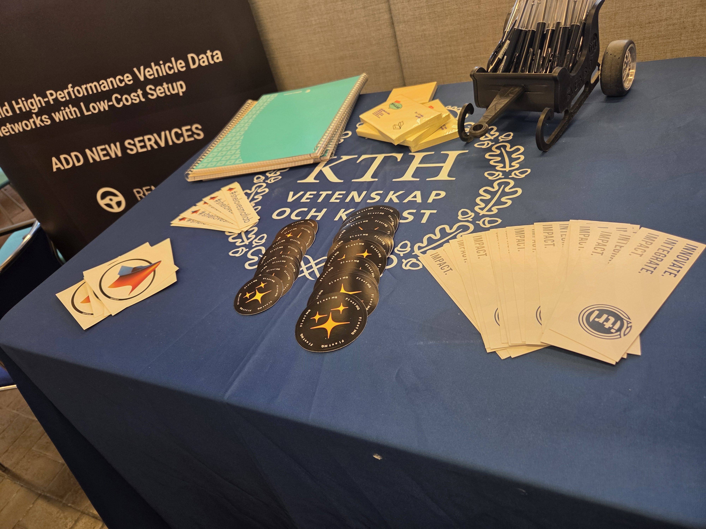
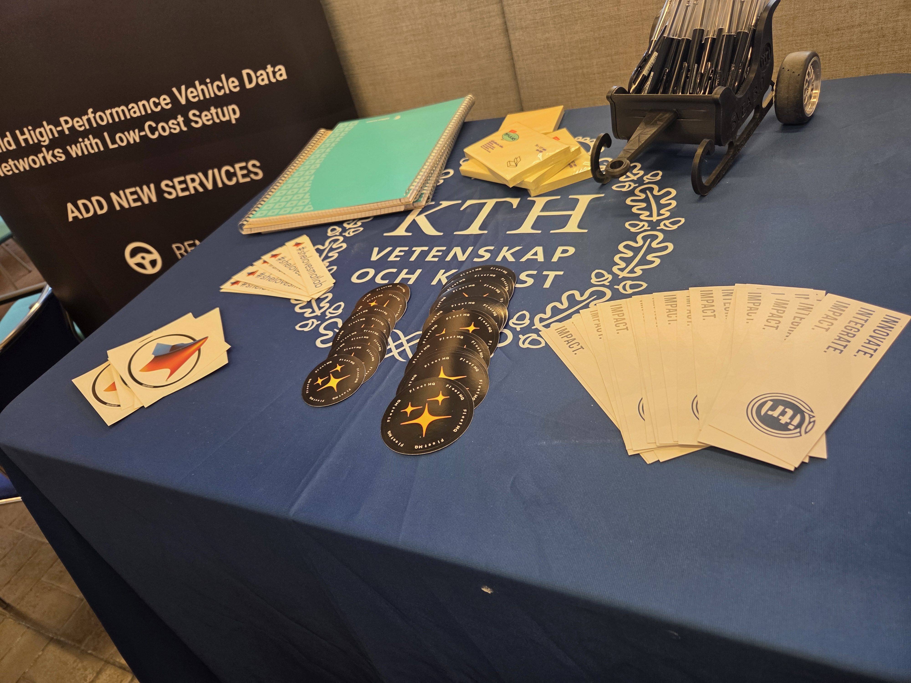

About me
I’m a Computer Science graduate and passionate Software developer, with a strong focus on building efficient, scalable, and user-friendly applications. I enjoy working at the intersection of data and design—transforming complex ideas into intuitive, interactive, and visually appealing solutions.
My expertise spans front-end development, user interface design, and data visualization, with hands-on experience in JavaScript, Python, Php and SQL. Whether it’s designing smooth user journeys or creating scalable applications, I aim to deliver products that are not only functional but also engaging. I love tackling challenges, learning new technologies, and collaborating with teams to craft digital products that make a difference.
What i'm doing
-

UI/UX design
Crafting modern, intuitive, and user-centered designs that deliver seamless experiences at a professional level.
-

Web development
High-quality development of sites at the professional level.
-
.svg)
Software Developnment
Building reliable and scalable software solutions tailored to your needs, from concept to deployment.
-
.svg)
Data Science
Transforming raw data into clear insights and interactive visualizations through advanced analysis and modeling.
Testimonials
-

Baithoon Saif (Manager)
Hetvi was hired at Scania AB as thesis worker to create a data visualization and prediction models. The project supported engineers in identifying relevant patterns within large datasets. She showed strong analytical skills, technical expertise, and dedication to delivering solutions that added real value.
-

Älfvåg Hector (Supervisior)
Hetvi joined Scania as a thesis worker for 6 months and quickly proved to be a valuable member of the team. What stood out most about Hetvi was not only her strong technical ability but also her confidence in presenting her work. She has excellent presentation skills, communicates her ideas clearly, and is never afraid to speak in public. At the same time, she shows humility by asking questions and seeking help when needed, which made collaboration easy and effective.
.svg)
.svg)
.svg)


 
